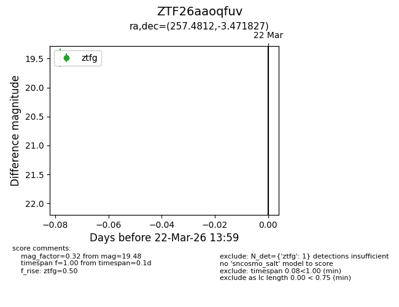
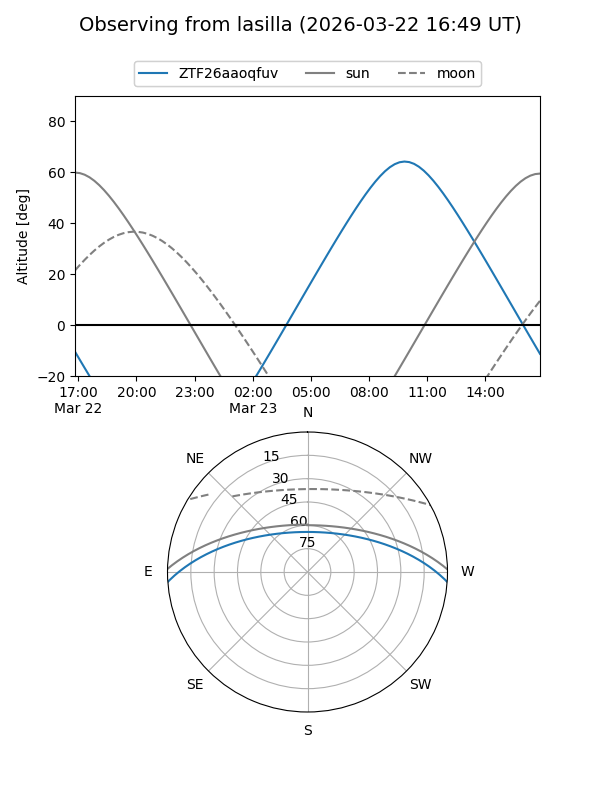
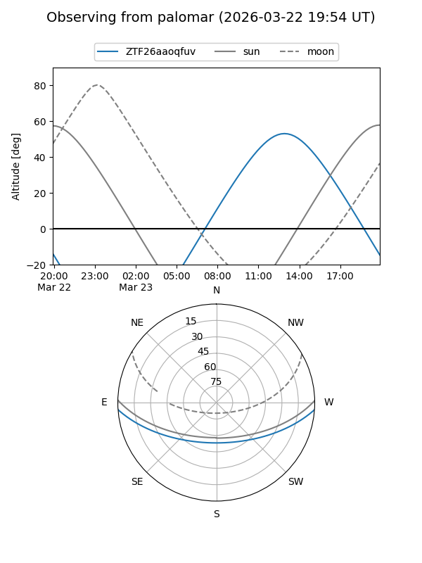

ZTF26aaoqfuv
Target ZTF26aaoqfuv at 2026-03-22 14:01
Aliases and brokers:
FINK: link
Lasair: link
ALeRCE: link
alt names
ZTF26aaoqfuv (ztf,fink_ztf)
Coordinates:
equatorial (ra, dec) = 257.4812,-3.47183
equatorial (HMS+DMS) = 17:09:55.49,-03:28:18.58
galactic (l, b) = (17.4988,+20.67881)
Flags:
Photometry:
last ztfg=19.48
1 ztfg detections
Lightcurve

Visibility


Additional plots